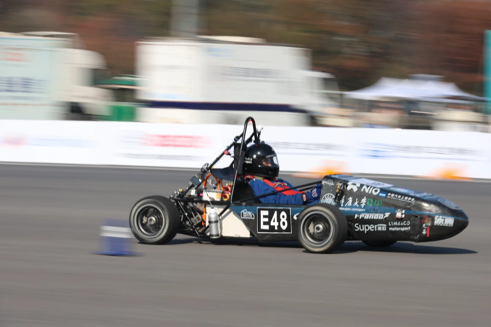
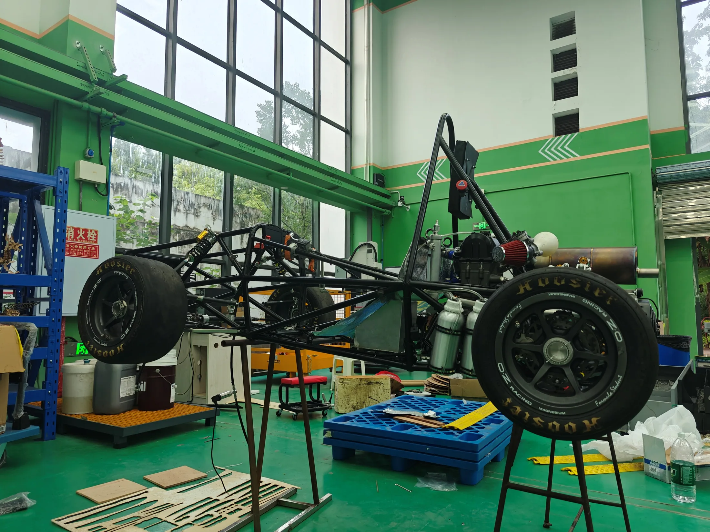

E48 赛道影像
车队工作平台
01 关于车队
CQUFSAE
重庆大学方程式赛车队
车队围绕大学生方程式赛车开展工程实践。队员参与赛车设计、零部件制造、整车装配与测试，在具体的实车问题中积累经验。
赛车设计制造与装配测试与整备

02 赛车与工程
从零部件
到整车。
车架、悬架、动力与电气系统共同组成一辆赛车。设计后的每一次装配与测试，都为后续调整提供依据。
车队工作平台用于记录日常协作，整理学习资料，并办理采购与报销。
访问工作平台03 队员入口
车队工作平台
根据当前网络选择入口。
进入平台后，使用车队账号登录。
两个入口均在新标签页打开。校外访问适用于持有学校有效账号及相应访问权限的队员。
在学校里使用手机流量，选择哪个入口？
使用手机流量或校外网络时，请选择“校外访问”。连接能够打开车队内网平台的校园网络后，选择“校内访问”。
校外访问需要怎样登录？
在浏览器中打开校外入口，按学校页面提示完成统一身份认证，再进入车队平台。平台需要登录时，使用自己的车队账号。学校登录状态到期后，按页面提示重新认证。
打开入口后一直加载，如何处理？
请先核对当前网络与所选入口。校内访问需要连通车队所在网络；校外访问可刷新页面，完成学校身份认证后重试。问题持续时，请向车队平台维护人员提供所选入口和页面提示。